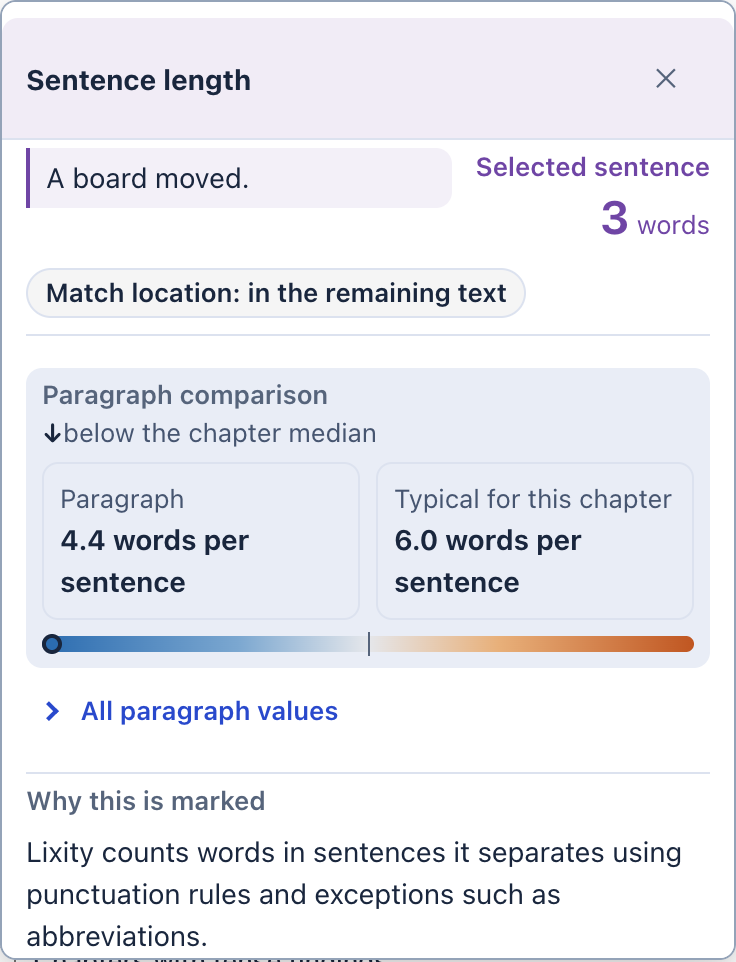

Revisar el pasaje en su contexto
Abre una marca y lee el párrafo entero. Mira qué palabras u oraciones se contaron y decide si el pasaje necesita algún cambio.
31 palabras en la frase de ejemplo, 22 de ellas funcionales.
Abre una frase marcada o una palabra repetida en su párrafo para ver qué palabras se contaron. Compara el borrador con la última versión guardada y ten a mano las fichas de personajes y las fuentes. El análisis se ejecuta de forma local.
Acorta una frase en el ejercicio del navegador o prueba «Check a sticky sentence» en la demostración en inglés.
Grabación sin sonido del proyecto ficticio Warehouse 4 en la versión de desarrollo.
No se pudo cargar el vídeo. Abre la demostración interactiva. Ver el proyecto de demostración (en inglés)

Abre una marca y lee el párrafo entero. Mira qué palabras u oraciones se contaron y decide si el pasaje necesita algún cambio.

Compara el borrador abierto con el manuscrito guardado. Lixity analiza ambos con los mismos ajustes para que puedas ver qué ha cambiado en el texto.

En Warehouse 4, el primer informe y su corrección sitúan el hecho en lugares distintos. Sigue una cita hasta la fuente guardada y compara los registros en la cronología.

Exporta una ficha guardada en PDF con sus pasajes y citas. Para tus lectores de prueba, crea un sitio de lectura con los capítulos y las notas de contexto que quieras compartir.
Lixity mide patrones y muestra los pasajes que los explican. Léelos en contexto y decide si una repetición, una frase larga o un cambio de tiempo verbal encaja en la escena.
Revisa la longitud de las frases, las citas detectadas y las repeticiones de un párrafo. Compara capítulos. Abre una marca para ver qué se contó.
El análisis integrado se ejecuta en tu equipo, donde se guardan los archivos del proyecto. Los servicios opcionales, como mapas y modelos de lenguaje externos, tienen sus propios requisitos de datos.
Edita un párrafo en el ejercicio del navegador, que usa reglas simplificadas. La demo en inglés es un proyecto más amplio, de solo lectura. Instala Lixity para analizar tus propios proyectos completos.
Elige macOS, Windows o Linux y sigue los pasos desde la descarga hasta el primer inicio.
Descargar la aplicación (inglés)El sitio y la aplicación están disponibles en siete idiomas. Tú eliges explícitamente el idioma de análisis; el inglés es la opción predeterminada. La documentación técnica permanece en inglés.
Las reglas y cobertura cambian según cada idioma; alemán e inglés ofrecen los análisis más amplios. Cambiar el idioma visual nunca altera tu manuscrito.
Technical guides, methods and automation contracts are maintained in English.
Cuéntanos qué querías hacer y dónde te atascaste. Basta con unos pasos o un ejemplo ficticio.
Enviar comentarios